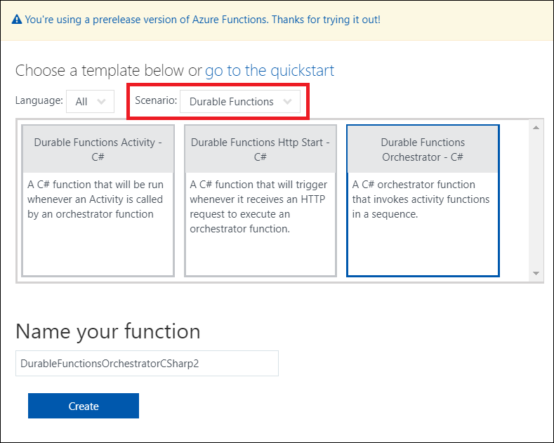

Warning
This documentation is out of date and will be deleted. The official documentation has been moved here.
Installing Durable Functions
Durable Functions is an extension of Azure Functions which uses a brand new binding extensibility model. Binding extensions can be added to a function app project using a simple NuGet package reference. The details of how to install this NuGet reference depends on how you are developing your function app.
When using Visual Studio to author functions using this Durable Task extension, you can simply add a NuGet reference to the Microsoft.Azure.WebJobs.Extensions.DurableTask. For Azure Portal development, function templates exist which can automatically install this extension.
Visual Studio 2017 (Recommended)
Visual Studio currently provides the most robust experience for developing against Durable Functions. Here is how to get started:
- Install the latest version of Visual Studio (VS 2017 15.3 or greater) if you haven't already and include the Azure tools in your setup options.
- Create a new Function App project. Even better, start with the Visual Studio Sample App (.zip).
- Add the following NuGet package reference to your .csproj file (NOTE: the sample app already has this):
<PackageReference Include="Microsoft.Azure.WebJobs.Extensions.DurableTask" Version="1.0.0-beta" />
- Configure the Azure Storage account connection string in the local.settins.json file. Both Azure Storage Emulator and Azure Storage account connection strings are acceptable. If you prefer to use Azure Storage Emulator, please first start it and then set the connection in local.settings.json:
"AzureWebJobsStorage": "UseDevelopmentStorage=true;DevelopmentStorageProxyUri=http://127.0.0.1:10002/",
"AzureWebJobsDashboard": "UseDevelopmentStorage=true;DevelopmentStorageProxyUri=http://127.0.0.1:10002/"
Your functions can be run locally and can also be published to and run in Azure.
Note
At the time of writing, Visual Studio does not yet have good support for developing functions apps that target the Azure Functions 2.x runtime. For this reason, it is recommended that all Durable Functions development in Visual Studio target the default Azure Functions 1.x runtime. Note that the Microsoft.Azure.WebJobs.Extensions.DurableTask extension is dual-targeted and designed to run in either version of the runtime.
Azure Portal
When using the Azure Portal for development, you can create Durable Functions using a predefined set of function templates. These function templates are only available when the function app is configured to target the Azure Functions 2.x runtime. These templates can be found under the Durable Functions scenario category, as shown in the screenshot below.

The following steps will help you install the Durable Functions extension and author a simple function orchestration.
- Create a function app and set the Runtime version to beta under Function app settings. This is required to leverage the new Functions 2.x runtime, which supports binding extensibility using templates.
- Create a new HTTP trigger function using the Durable Functions Http Start - C# template. This function can be used to create new orchestration instances.
- Click the Install link to install the Microsoft.Azure.WebJobs.Extensions.DurableTask extension into the function app. This can be done from any of the Durable Functions templates.
- Create a new activity function using the Durable Functions Activity - C# template.
- Create a new orchestrator function using the Durable Functions Orchestrator - C# template. Replace the
"Hello"function name text with the name of the function you created in the previous step (e.g."Hello1").
At this point your function app should be set up to run a basic Durable Functions scenario. You can test it out by manually invoking the HTTP trigger function that you created in step #2.
Note
Manually triggering orchestrator and activity functions in the portal is not supported at this time. Instead, you must manually trigger a function which uses the Orchestration client input binding (such as the one created by the Durable Functions Http Start - C# template) to indirectly invoke orchestrator functions. Because the execution spans multiple functions, the recommended way to view the output of the orchestration is to open a new browser tab and open the Streaming logs blade, which can be found under Platform features.
Azure Functions CLI
Authoring Durable Functions using the Azure Functions CLI is not supported at this time. Support will become available only after the Azure Functions CLI is updated to support installing binding extensions.